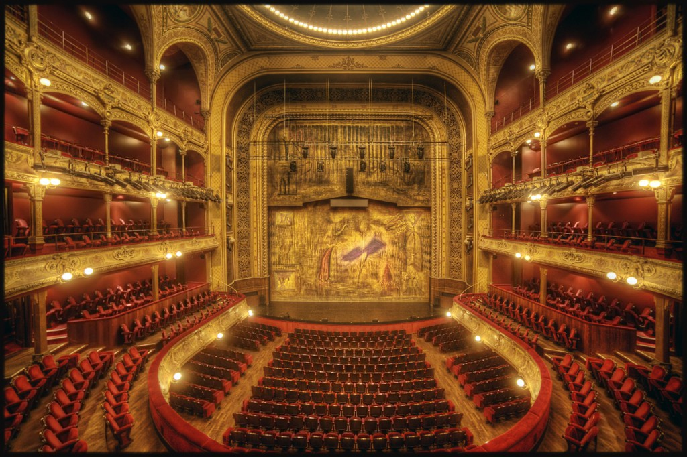
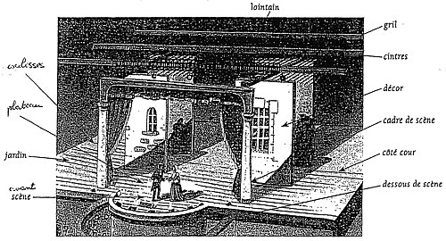

Une cage de théâtre et composé de plusieurs parties :
1. Les coulisses, en hauteur, est la partie d'un théâtre située sur les côtés et en arrière de la scène,
derrière les décors, cachée aux spectateurs.
2. Le plateau, sol de la scène et des coulisses.
et le côté cour, qui désigne le côté droit de la scène.
4. L'Avant-scène, l'avant de la scène.
5. Le loitain qui représente l'arrière de la scène.
6. La gril, qui est le plafond de la scène.
7. Les cintres forment l'espace entre le gril et le plateau.
8. Cage de scène, tout ça ! ( Autrement dit, ce qu'il y a face au spéctateurs. );

Nom du théatre : Palais-Cardinal / Palais-Royal.
Date de construction : 1628.
Construit par : Richelieu.
description : C'est un grand théatre parisien ou la troupe
de Molière s'y est produite pendant une dizaine d'années
avant d'être chassé.Il a servit de résidence à la régente
Anne d'Autriche (1601-1666) et au jeune Louis
XIV enfant pendant les troubles de la Fronde et devient
le Palais-Royal.


![[Image de fond]](logoxvii.jpg)
![[flèche-gauche]](fleche-gauche.jpg)
![[flèche-droite]](fleche-droite.jpg)